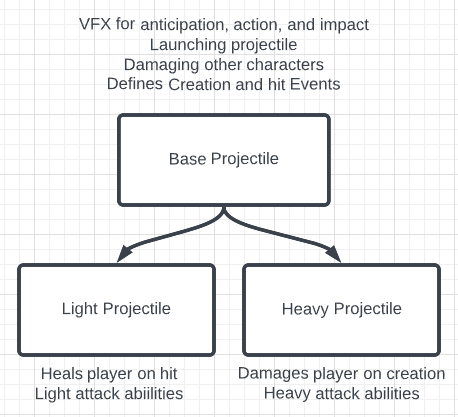

Overview
Base Projectile
This blueprint acts as the parent to all the Projectiles and operates on the logic layer. Base projectile takes an Abilities Struct that it uses in its children to determine if this shot has any special behaviors it should apply. On a high level, this blueprint handles launching, striking, damaging hit characters, and VFX for anticipation, action, and impact. It also defines and calls an OnHit method where the hit character is passed inside, as well as an OnCreate method.
Start
On creating the projectile, the OnCreate method is called so that the immediate children can deploy some logic of their own when a projectile is first created. It also triggers the anticipation and action VFX from the VFX manager. After this, it will set the object to be destroyed after a delay.
Unreal Engine is very finicky when it comes to launching a projectile immediately after creating it and can sometimes apply no impulse. To combat this, the start method will launch the projectile and wait for a frame to see if it has actually been launched.
On Overlap
When the projectile overlaps something else, it will check for a viable hit on another Base Character before destroying itself. To check for a viable hit, it checks the tag of the other object to see if it is a “Player” or “Enemy” and then ensures that the projectile belongs to the opposite side by checking the IsPlayerShot boolean. If it belongs to the same side as the character, it does not destroy itself.
When a viable hit occurs, the OnHit method is called and passed the Base Character object of what the projectile hit. It then applies the damage to the other character. After this, the VFX manager is used to deploy the impact VFX.